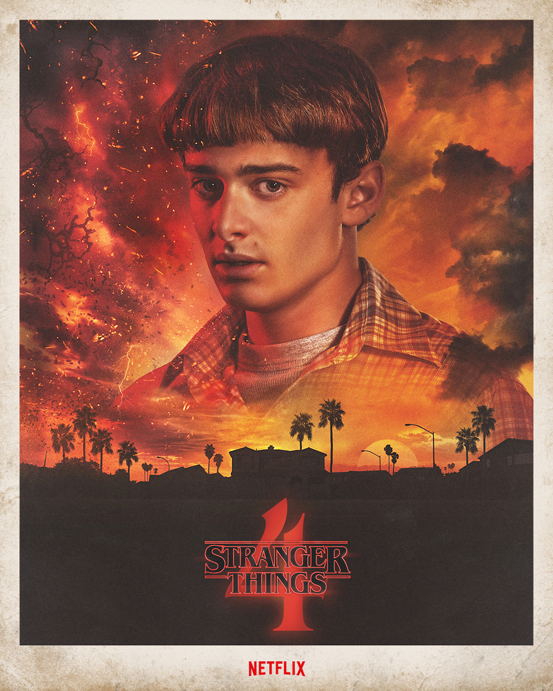

The characters
If you want to write your own theories about the show, we give you the opportunity to look through all the characters again. Down below we listed the main cast as well as some important side-rolls.
Eleven / Jane Hopper played by Millie Bobbie Brown

Mike Wheeler played by Finn Wolfhard

Will Byers played by Noah Schnapp
Max Mayfield played by Sadie Sink

Lucas Sinclair played by Caleb McLaughlin
Dustin Henderson played by Gaten Matarazzo

Nancy Wheeler played by Natalia Dyer

Steve Harrington played by Joe Keery

Jonathan Byers played by Charlie Heaton

Robin Buckley played by Maya Hawke

Joyce Byers played by Winona Ryder

Jim Hopper played by David Harbour